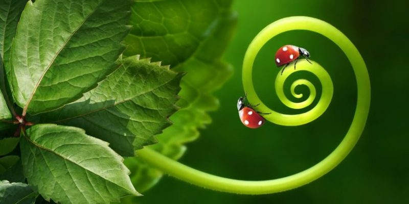
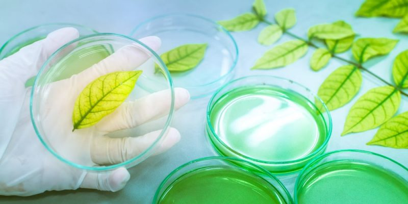
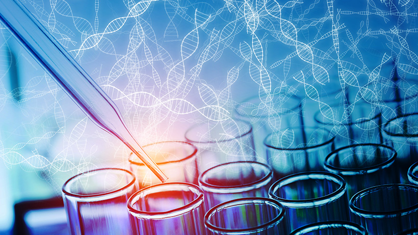
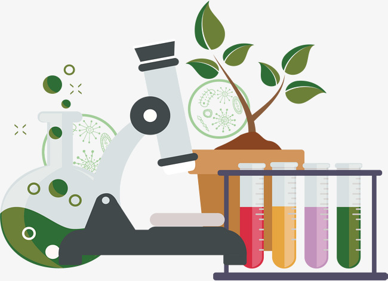
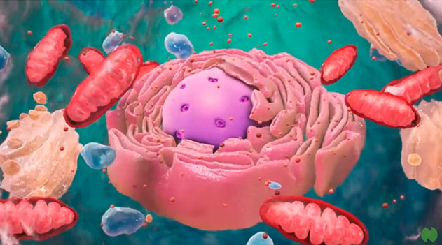
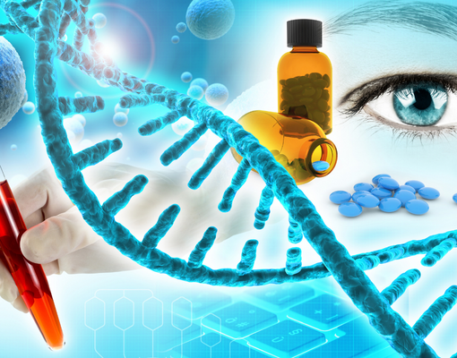
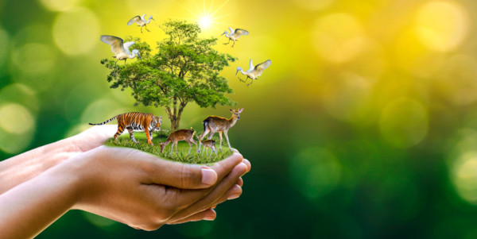

❮
❯
A biologia é a ciência que estuda a vida em suas diversas formas e manifestações. Ela busca compreender os processos vitais, desde os níveis mais básicos, como a estrutura e funcionamento das células, até as complexas interações entre os organismos e seu ambiente. A biologia é uma disciplina abrangente e diversificada, englobando uma vasta gama de tópicos, como genética, ecologia, evolução, fisiologia, taxonomia, entre outros.
Uma das características distintivas da biologia é a abordagem científica, que envolve a observação, a experimentação e a análise de dados para formular teorias e leis que expliquem os fenômenos biológicos. A pesquisa biológica desempenha um papel fundamental na nossa compreensão do mundo natural, contribuindo para avanços em medicina, agricultura, conservação ambiental e muitos outros campos.
A biologia é uma ciência dinâmica e em constante evolução, à medida que novas tecnologias e descobertas ampliam nosso conhecimento sobre a vida na Terra. Ela desempenha um papel crucial na resolução de desafios globais, como a preservação da biodiversidade, o combate a doenças e a compreensão das mudanças climáticas. Em resumo, a biologia é uma disciplina fundamental que nos ajuda a desvendar os mistérios da vida e a melhorar nossa qualidade de vida.
A citologia é um ramo da biologia que se concentra no estudo das células. As células são as unidades fundamentais da vida, sendo as menores estruturas capazes de realizar todas as funções vitais. A citologia se dedica a investigar a estrutura, função, composição e comportamento das células, proporcionando insights valiosos sobre a biologia e os processos que sustentam a vida.
Um dos principais objetivos da citologia é examinar as diferenças e semelhanças entre tipos de células, seja de organismos unicelulares, como bactérias e protozoários, ou de organismos multicelulares, como plantas, animais e seres humanos. Isso envolve a análise de organelas intracelulares, como o núcleo, mitocôndrias, retículo endoplasmático e muitas outras estruturas que desempenham papéis essenciais na manutenção da vida.
A citologia também é fundamental na medicina, uma vez que ajuda a diagnosticar doenças através da observação de células anormais, como aquelas presentes em tumores cancerígenos, e a avaliar o impacto de terapias e tratamentos. Além disso, é uma ferramenta valiosa na pesquisa científica, permitindo avanços em áreas como genética, biologia molecular e desenvolvimento de novas terapias.
A bioquímica é uma disciplina interdisciplinar que se situa na interseção da biologia e da química. Ela se dedica ao estudo das reações químicas que ocorrem nos organismos vivos e das moléculas que compõem as estruturas celulares e os processos metabólicos. Em essência, a bioquímica busca compreender a química da vida.
Essa área de estudo investiga uma ampla gama de tópicos, incluindo a estrutura e função das biomoléculas, como proteínas, ácidos nucleicos, carboidratos e lipídios. Ela também se concentra nas reações metabólicas que ocorrem dentro das células, como a respiração celular, a fotossíntese e a síntese de biomoléculas.
A bioquímica é fundamental para a compreensão dos processos biológicos em um nível molecular, fornecendo insights sobre como as células realizam suas funções vitais e como as informações genéticas são expressas. Ela desempenha um papel crucial em áreas como a medicina, uma vez que ajuda a elucidar as bases moleculares de doenças e no desenvolvimento de medicamentos. Além disso, a engenharia genética e a biotecnologia também dependem fortemente dos princípios da bioquímica para modificar e criar organismos com características desejadas.
A ecologia é a ciência que estuda as relações entre os seres vivos e o ambiente em que vivem. Ela se concentra em entender como os organismos interagem uns com os outros e com o mundo ao seu redor, bem como como essas interações influenciam os ecossistemas e o planeta como um todo. Em essência, a ecologia procura desvendar os padrões e processos que governam a vida na Terra.
Essa disciplina abrange uma ampla gama de tópicos, desde a ecologia de populações, que se concentra na dinâmica das populações de organismos, até a ecologia de ecossistemas, que explora como diferentes espécies interagem em comunidades e os ciclos de nutrientes e energia em ecossistemas. Além disso, a ecologia também se preocupa com questões globais, como as mudanças climáticas, a conservação da biodiversidade e a sustentabilidade dos recursos naturais.
A ecologia desempenha um papel fundamental na nossa compreensão do mundo natural e na resolução de desafios ambientais. Ela fornece informações essenciais para a conservação da natureza, o manejo sustentável de recursos naturais, a proteção de ecossistemas frágeis e a avaliação de impactos ambientais. Além disso, a ecologia é crucial para compreender como as atividades humanas afetam o meio ambiente e como podemos agir de maneira mais responsável em relação ao planeta.
